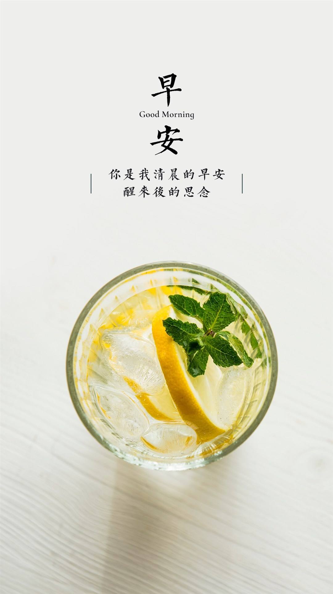

- 随便看看，随便翻翻
- what's play
- what's see
{% for i in page_list%}

{% endfor %}
{{ i['title'] }}
书籍收藏
- 【活动作品】柠檬绿兔小白个人博客模板30...
 展示的是首页html，博客页面布局格式简单，没有复杂的背景，色彩局部点缀，动态的幻灯片展示，切换卡，标...
展示的是首页html，博客页面布局格式简单，没有复杂的背景，色彩局部点缀，动态的幻灯片展示，切换卡，标... - 个人博客模板（2014草根寻梦）30...
2014第一版《草根寻梦》个人博客模板简单、优雅、稳重、大气、低调。专为年轻有志向却又低调的草根站长设...
- 黑色质感时间轴html5个人博客模板30...
 黑色时间轴html5个人博客模板颜色以黑色为主色，添加了彩色作为网页的一个亮点，导航高亮显示、banner图片...
黑色时间轴html5个人博客模板颜色以黑色为主色，添加了彩色作为网页的一个亮点，导航高亮显示、banner图片...